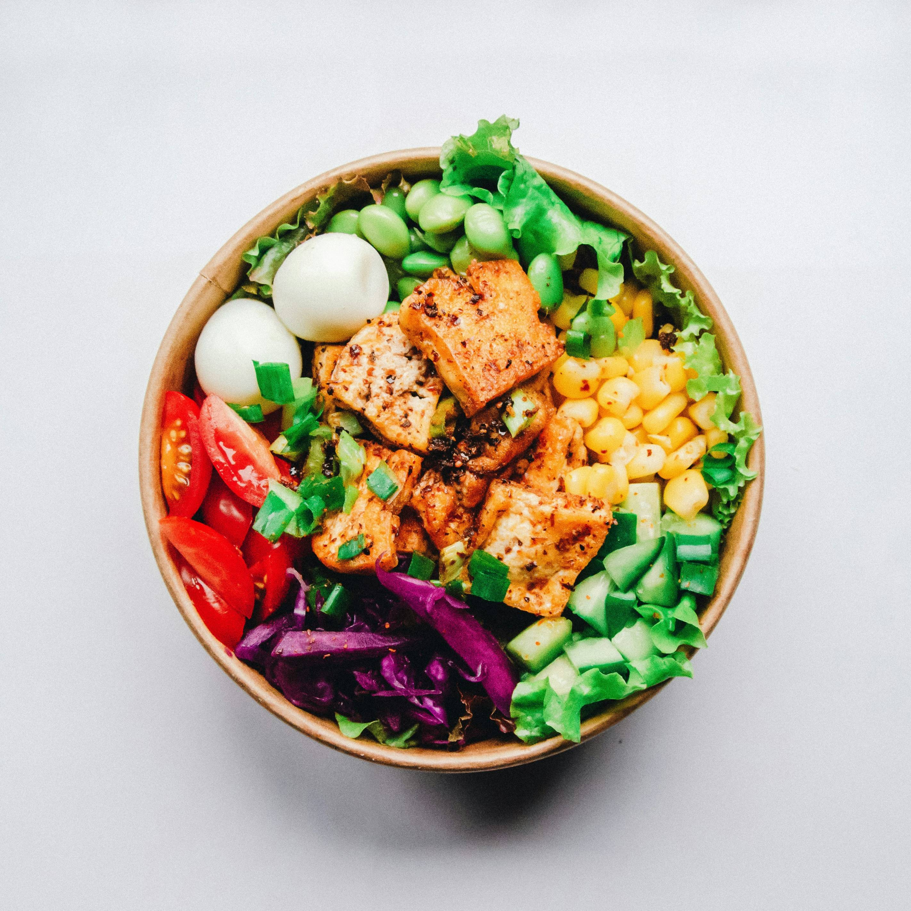
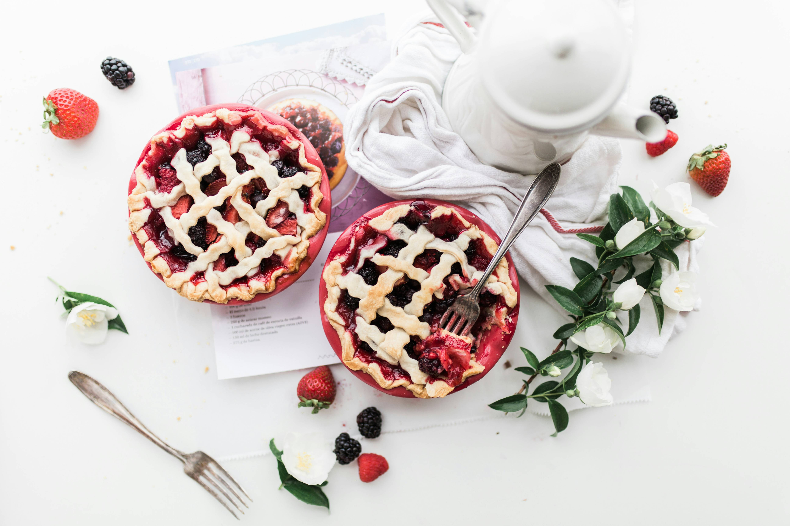
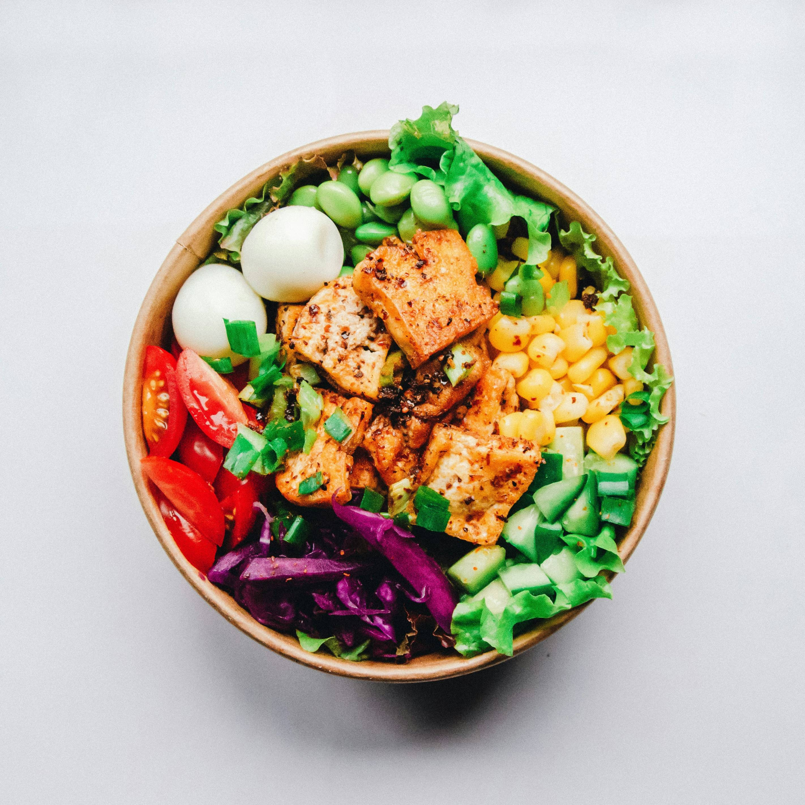
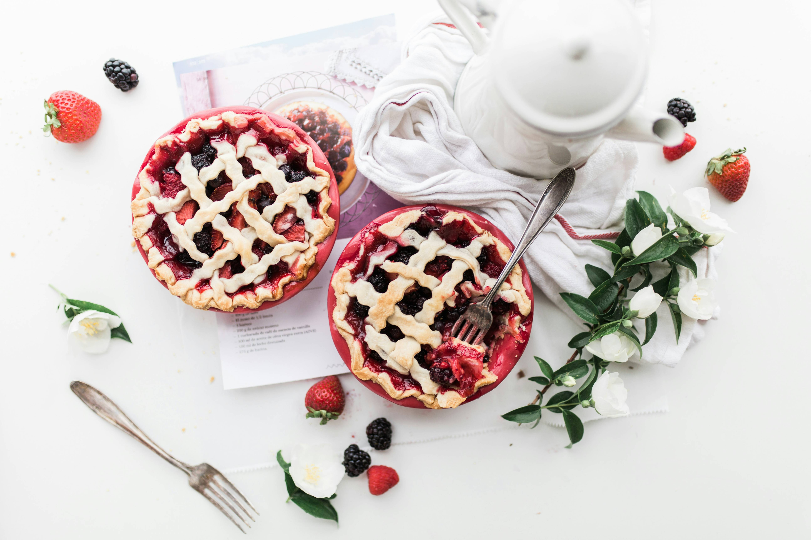
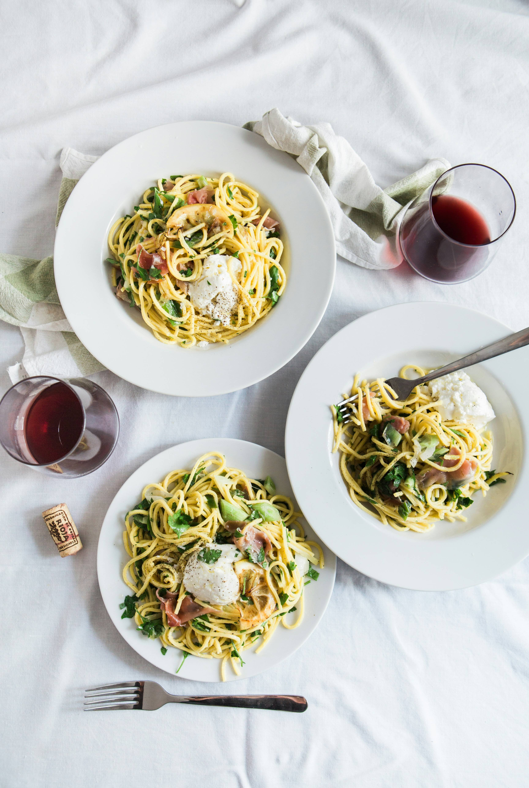
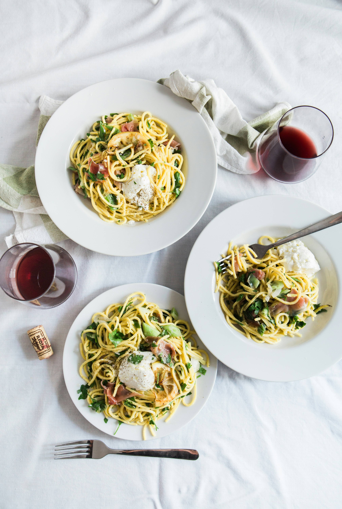

My Meal Plan
Hello, I love cooking and baking so this site is about what are some of the dishes I’m thinking of making this week.
Click on the Recipe link to browse the recipe of waffle (I only made 1 for this assignment) or see a Trello board of the week's plan above.
 




 
